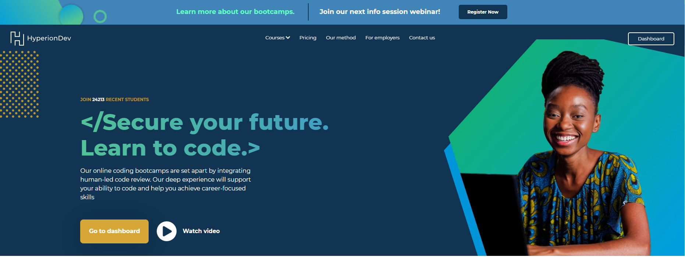

By: Braden Sutton
As a programmer, I was looking for a way to learn more programming. That's when I came across HyperionDev. This is a coding boot camp that promises to teach you everything you need to know about coding. After some research and consideration, I decided to do a bootcamp.
The curriculum was demanding, but the instructors were knowledgeable and supportive. They were always available to answer my questions and gave me valuable feedback on my coding projects. The course taught me several programming languages such as Python, front-end web development using HTML and CSS.
One of the highlights of my experience at HyperionDev was the opportunity to work on real projects. This allowed me to practice the skills I learned and gain experience in different areas of programming.
Overall, my time at HyperionDev was a very rewarding experience. Not only did I learn a lot about coding, but I also learned valuable problem-solving, time management, and collaboration skills. The bootcamp solidified my programming foundation and prepared me for a career in the tech industry.